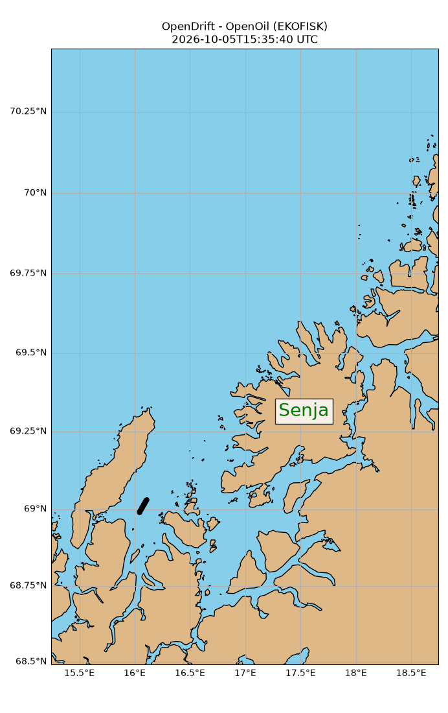
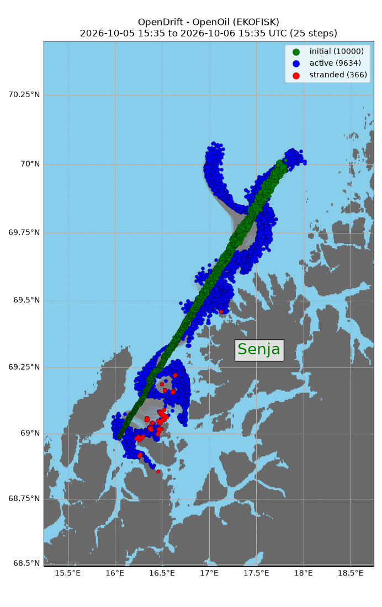

Note
Go to the end to download the full example code.
Cone seeding
12:09:57 INFO opendrift:569: OpenDriftSimulation initialised (version 1.14.11 / v1.14.12-45-g2e494c3)
Using live data from Thredds
o.add_readers_from_list([
'https://thredds.met.no/thredds/dodsC/fou-hi/norkystv3_800m_m00_be'])
Adjusting some configuration
o.set_config('processes:dispersion', True)
o.set_config('processes:evaporation', False)
o.set_config('processes:emulsification', True)
Seed elements along cone, e.g. ship track with increasing uncertainty in position
latstart = 68.988911
lonstart = 16.040701
latend = 69.991446
lonend = 17.760061
time = [datetime.utcnow(), datetime.utcnow() + timedelta(hours=12)]
o.seed_cone(lon=[lonstart, lonend], lat=[latstart, latend],
oil_type='EKOFISK', radius=[100, 800], number=10000, time=[time])
print(o)
/root/project/examples/example_cone.py:31: DeprecationWarning: datetime.datetime.utcnow() is deprecated and scheduled for removal in a future version. Use timezone-aware objects to represent datetimes in UTC: datetime.datetime.now(datetime.UTC).
time = [datetime.utcnow(), datetime.utcnow() + timedelta(hours=12)]
12:09:57 INFO opendrift.models.basemodel.environment:203: Adding a global landmask from GSHHG
12:10:03 INFO opendrift.models.basemodel.environment:227: Fallback values will be used for the following variables which have no readers:
12:10:03 INFO opendrift.models.basemodel.environment:230: sea_surface_height: 0.000000
12:10:03 INFO opendrift.models.basemodel.environment:230: upward_sea_water_velocity: 0.000000
12:10:03 INFO opendrift.models.basemodel.environment:230: sea_surface_wave_significant_height: 0.000000
12:10:03 INFO opendrift.models.basemodel.environment:230: sea_surface_wave_stokes_drift_x_velocity: 0.000000
12:10:03 INFO opendrift.models.basemodel.environment:230: sea_surface_wave_stokes_drift_y_velocity: 0.000000
12:10:03 INFO opendrift.models.basemodel.environment:230: sea_surface_wave_period_at_variance_spectral_density_maximum: 0.000000
12:10:03 INFO opendrift.models.basemodel.environment:230: sea_surface_wave_mean_period_from_variance_spectral_density_second_frequency_moment: 0.000000
12:10:03 INFO opendrift.models.basemodel.environment:230: sea_ice_area_fraction: 0.000000
12:10:03 INFO opendrift.models.basemodel.environment:230: sea_ice_x_velocity: 0.000000
12:10:03 INFO opendrift.models.basemodel.environment:230: sea_ice_y_velocity: 0.000000
12:10:03 INFO opendrift.models.basemodel.environment:230: sea_water_temperature: 10.000000
12:10:03 INFO opendrift.models.basemodel.environment:230: sea_water_salinity: 34.000000
12:10:03 INFO opendrift.models.basemodel.environment:230: sea_floor_depth_below_sea_level: 10000.000000
12:10:03 INFO opendrift.models.basemodel.environment:230: horizontal_diffusivity: 0.000000
12:10:03 INFO opendrift.models.basemodel.environment:230: ocean_vertical_diffusivity: 0.020000
12:10:03 INFO opendrift.models.basemodel.environment:230: ocean_mixed_layer_thickness: 50.000000
12:10:03 INFO opendrift.models.openoil.adios.dirjs:86: Querying ADIOS database for oil: EKOFISK
12:10:03 WARNING opendrift.models.openoil.adios.dirjs:90: Several oils found with name: EKOFISK: ['AD00328', 'AD00329', 'AD00332', 'AD00333', 'AD01944', 'AD02094', 'AD02463', 'AD02558', 'NO00013', 'NO00014', 'NO00015', 'NO00016'], using first.
12:10:03 INFO opendrift.models.openoil.openoil:1731: Using density 809.002835 and viscosity 3.3498550728972226e-06 of oiltype EKOFISK
===========================
Model: OpenOil (OpenDrift version 1.14.11)
0 active Oil particles (0 deactivated, 10000 scheduled)
-------------------
Environment variables:
-----
land_binary_mask
1) global_landmask
-----
Readers not added for the following variables:
horizontal_diffusivity
ocean_mixed_layer_thickness
ocean_vertical_diffusivity
sea_floor_depth_below_sea_level
sea_ice_area_fraction
sea_ice_x_velocity
sea_ice_y_velocity
sea_surface_height
sea_surface_wave_mean_period_from_variance_spectral_density_second_frequency_moment
sea_surface_wave_period_at_variance_spectral_density_maximum
sea_surface_wave_significant_height
sea_surface_wave_stokes_drift_x_velocity
sea_surface_wave_stokes_drift_y_velocity
sea_water_salinity
sea_water_temperature
upward_sea_water_velocity
x_sea_water_velocity
x_wind
y_sea_water_velocity
y_wind
---
Lazy readers:
LazyReader: https://thredds.met.no/thredds/dodsC/fou-hi/norkystv3_800m_m00_be
Discarded readers:
===========================
Running model for 24 hours
o.run(steps=24*2, time_step=1800, time_step_output=3600)
12:10:03 INFO opendrift:1910: Skipping environment variable upward_sea_water_velocity because of condition ['drift:vertical_advection', 'is', False]
12:10:03 INFO opendrift:1921: Storing previous values of element property lon because of condition (('general:coastline_action', 'in', ['stranding', 'previous']), 'or', ('general:seafloor_action', 'in', ['previous']))
12:10:03 INFO opendrift:1921: Storing previous values of element property lat because of condition (('general:coastline_action', 'in', ['stranding', 'previous']), 'or', ('general:seafloor_action', 'in', ['previous']))
12:10:03 INFO opendrift:958: Using existing reader for land_binary_mask to move elements to ocean
12:10:03 INFO opendrift:989: All points are in ocean
12:10:03 INFO opendrift.models.openoil.openoil:697: Oil-water surface tension is 0.027884 Nm
12:10:03 INFO opendrift.models.openoil.openoil:710: Max water fraction not available for EKOFISK, using default
12:10:03 INFO opendrift:2237: 2026-10-08 12:09:57.130473 - step 1 of 48 - 417 active elements (0 deactivated)
12:10:03 INFO opendrift.readers:67: Opening file with xr.open_dataset
12:10:16 INFO opendrift.readers.reader_netCDF_CF_generic:340: Detected dimensions: {'x': 'X', 'y': 'Y', 'z': 'depth', 'time': 'time'}
12:10:16 INFO opendrift.readers.basereader:175: Variable x_sea_water_velocity will be rotated from eastward_sea_water_velocity
12:10:16 INFO opendrift.readers.basereader:175: Variable y_sea_water_velocity will be rotated from northward_sea_water_velocity
12:10:16 INFO opendrift.readers.basereader:175: Variable x_wind will be rotated from eastward_wind
12:10:16 INFO opendrift.readers.basereader:175: Variable y_wind will be rotated from northward_wind
12:10:34 INFO opendrift:2237: 2026-10-08 12:39:57.130473 - step 2 of 48 - 834 active elements (0 deactivated)
12:10:34 INFO opendrift:2237: 2026-10-08 13:09:57.130473 - step 3 of 48 - 1250 active elements (0 deactivated)
12:10:39 WARNING opendrift.readers.basereader.structured:324: Data block from https://thredds.met.no/thredds/dodsC/fou-hi/norkystv3_800m_m00_be not large enough to cover element positions within timestep. Buffer size (8) must be increased. See `Variables.set_buffer_size`.
12:10:39 INFO opendrift:2237: 2026-10-08 13:39:57.130473 - step 4 of 48 - 1667 active elements (0 deactivated)
12:10:39 WARNING opendrift.readers.basereader.structured:324: Data block from https://thredds.met.no/thredds/dodsC/fou-hi/norkystv3_800m_m00_be not large enough to cover element positions within timestep. Buffer size (8) must be increased. See `Variables.set_buffer_size`.
12:10:39 INFO opendrift:2237: 2026-10-08 14:09:57.130473 - step 5 of 48 - 2084 active elements (0 deactivated)
12:10:48 WARNING opendrift.readers.basereader.structured:324: Data block from https://thredds.met.no/thredds/dodsC/fou-hi/norkystv3_800m_m00_be not large enough to cover element positions within timestep. Buffer size (8) must be increased. See `Variables.set_buffer_size`.
12:10:48 INFO opendrift:2237: 2026-10-08 14:39:57.130473 - step 6 of 48 - 2500 active elements (0 deactivated)
12:10:48 WARNING opendrift.readers.basereader.structured:324: Data block from https://thredds.met.no/thredds/dodsC/fou-hi/norkystv3_800m_m00_be not large enough to cover element positions within timestep. Buffer size (8) must be increased. See `Variables.set_buffer_size`.
12:10:48 INFO opendrift:2237: 2026-10-08 15:09:57.130473 - step 7 of 48 - 2917 active elements (0 deactivated)
12:11:00 WARNING opendrift.readers.basereader.structured:324: Data block from https://thredds.met.no/thredds/dodsC/fou-hi/norkystv3_800m_m00_be not large enough to cover element positions within timestep. Buffer size (8) must be increased. See `Variables.set_buffer_size`.
12:11:01 INFO opendrift:2237: 2026-10-08 15:39:57.130473 - step 8 of 48 - 3334 active elements (0 deactivated)
12:11:01 WARNING opendrift.readers.basereader.structured:324: Data block from https://thredds.met.no/thredds/dodsC/fou-hi/norkystv3_800m_m00_be not large enough to cover element positions within timestep. Buffer size (8) must be increased. See `Variables.set_buffer_size`.
12:11:01 INFO opendrift:2237: 2026-10-08 16:09:57.130473 - step 9 of 48 - 3750 active elements (0 deactivated)
12:11:27 WARNING opendrift.readers.basereader.structured:324: Data block from https://thredds.met.no/thredds/dodsC/fou-hi/norkystv3_800m_m00_be not large enough to cover element positions within timestep. Buffer size (8) must be increased. See `Variables.set_buffer_size`.
12:11:27 INFO opendrift:2237: 2026-10-08 16:39:57.130473 - step 10 of 48 - 4167 active elements (0 deactivated)
12:11:27 WARNING opendrift.readers.basereader.structured:324: Data block from https://thredds.met.no/thredds/dodsC/fou-hi/norkystv3_800m_m00_be not large enough to cover element positions within timestep. Buffer size (8) must be increased. See `Variables.set_buffer_size`.
12:11:27 INFO opendrift:2237: 2026-10-08 17:09:57.130473 - step 11 of 48 - 4583 active elements (0 deactivated)
12:11:38 WARNING opendrift.readers.basereader.structured:324: Data block from https://thredds.met.no/thredds/dodsC/fou-hi/norkystv3_800m_m00_be not large enough to cover element positions within timestep. Buffer size (8) must be increased. See `Variables.set_buffer_size`.
12:11:38 INFO opendrift:2237: 2026-10-08 17:39:57.130473 - step 12 of 48 - 5000 active elements (0 deactivated)
12:11:38 WARNING opendrift.readers.basereader.structured:324: Data block from https://thredds.met.no/thredds/dodsC/fou-hi/norkystv3_800m_m00_be not large enough to cover element positions within timestep. Buffer size (8) must be increased. See `Variables.set_buffer_size`.
12:11:38 INFO opendrift:2237: 2026-10-08 18:09:57.130473 - step 13 of 48 - 5414 active elements (3 deactivated)
12:11:53 WARNING opendrift.readers.basereader.structured:324: Data block from https://thredds.met.no/thredds/dodsC/fou-hi/norkystv3_800m_m00_be not large enough to cover element positions within timestep. Buffer size (8) must be increased. See `Variables.set_buffer_size`.
12:11:53 INFO opendrift:2237: 2026-10-08 18:39:57.130473 - step 14 of 48 - 5826 active elements (7 deactivated)
12:11:53 WARNING opendrift.readers.basereader.structured:324: Data block from https://thredds.met.no/thredds/dodsC/fou-hi/norkystv3_800m_m00_be not large enough to cover element positions within timestep. Buffer size (8) must be increased. See `Variables.set_buffer_size`.
12:11:53 INFO opendrift:2237: 2026-10-08 19:09:57.130473 - step 15 of 48 - 6238 active elements (12 deactivated)
12:12:04 WARNING opendrift.readers.basereader.structured:324: Data block from https://thredds.met.no/thredds/dodsC/fou-hi/norkystv3_800m_m00_be not large enough to cover element positions within timestep. Buffer size (8) must be increased. See `Variables.set_buffer_size`.
12:12:04 INFO opendrift:2237: 2026-10-08 19:39:57.130473 - step 16 of 48 - 6649 active elements (18 deactivated)
12:12:04 WARNING opendrift.readers.basereader.structured:324: Data block from https://thredds.met.no/thredds/dodsC/fou-hi/norkystv3_800m_m00_be not large enough to cover element positions within timestep. Buffer size (8) must be increased. See `Variables.set_buffer_size`.
12:12:04 INFO opendrift:2237: 2026-10-08 20:09:57.130473 - step 17 of 48 - 7056 active elements (27 deactivated)
12:12:12 WARNING opendrift.readers.basereader.structured:324: Data block from https://thredds.met.no/thredds/dodsC/fou-hi/norkystv3_800m_m00_be not large enough to cover element positions within timestep. Buffer size (8) must be increased. See `Variables.set_buffer_size`.
12:12:13 INFO opendrift:2237: 2026-10-08 20:39:57.130473 - step 18 of 48 - 7470 active elements (30 deactivated)
12:12:13 WARNING opendrift.readers.basereader.structured:324: Data block from https://thredds.met.no/thredds/dodsC/fou-hi/norkystv3_800m_m00_be not large enough to cover element positions within timestep. Buffer size (8) must be increased. See `Variables.set_buffer_size`.
12:12:13 INFO opendrift:2237: 2026-10-08 21:09:57.130473 - step 19 of 48 - 7883 active elements (33 deactivated)
12:12:26 WARNING opendrift.readers.basereader.structured:324: Data block from https://thredds.met.no/thredds/dodsC/fou-hi/norkystv3_800m_m00_be not large enough to cover element positions within timestep. Buffer size (8) must be increased. See `Variables.set_buffer_size`.
12:12:27 INFO opendrift:2237: 2026-10-08 21:39:57.130473 - step 20 of 48 - 8300 active elements (33 deactivated)
12:12:27 WARNING opendrift.readers.basereader.structured:324: Data block from https://thredds.met.no/thredds/dodsC/fou-hi/norkystv3_800m_m00_be not large enough to cover element positions within timestep. Buffer size (8) must be increased. See `Variables.set_buffer_size`.
12:12:27 INFO opendrift:2237: 2026-10-08 22:09:57.130473 - step 21 of 48 - 8717 active elements (33 deactivated)
12:12:42 WARNING opendrift.readers.basereader.structured:324: Data block from https://thredds.met.no/thredds/dodsC/fou-hi/norkystv3_800m_m00_be not large enough to cover element positions within timestep. Buffer size (8) must be increased. See `Variables.set_buffer_size`.
12:12:42 INFO opendrift:2237: 2026-10-08 22:39:57.130473 - step 22 of 48 - 9133 active elements (33 deactivated)
12:12:42 WARNING opendrift.readers.basereader.structured:324: Data block from https://thredds.met.no/thredds/dodsC/fou-hi/norkystv3_800m_m00_be not large enough to cover element positions within timestep. Buffer size (8) must be increased. See `Variables.set_buffer_size`.
12:12:42 INFO opendrift:2237: 2026-10-08 23:09:57.130473 - step 23 of 48 - 9550 active elements (33 deactivated)
12:12:47 WARNING opendrift.readers.basereader.structured:324: Data block from https://thredds.met.no/thredds/dodsC/fou-hi/norkystv3_800m_m00_be not large enough to cover element positions within timestep. Buffer size (8) must be increased. See `Variables.set_buffer_size`.
12:12:47 INFO opendrift:2237: 2026-10-08 23:39:57.130473 - step 24 of 48 - 9966 active elements (34 deactivated)
12:12:47 WARNING opendrift.readers.basereader.structured:324: Data block from https://thredds.met.no/thredds/dodsC/fou-hi/norkystv3_800m_m00_be not large enough to cover element positions within timestep. Buffer size (8) must be increased. See `Variables.set_buffer_size`.
12:12:48 INFO opendrift:2237: 2026-10-09 00:09:57.130473 - step 25 of 48 - 9964 active elements (36 deactivated)
12:13:20 INFO opendrift:2237: 2026-10-09 00:39:57.130473 - step 26 of 48 - 9956 active elements (44 deactivated)
12:13:20 INFO opendrift:2237: 2026-10-09 01:09:57.130473 - step 27 of 48 - 9948 active elements (52 deactivated)
12:13:46 INFO opendrift:2237: 2026-10-09 01:39:57.130473 - step 28 of 48 - 9944 active elements (56 deactivated)
12:13:46 INFO opendrift:2237: 2026-10-09 02:09:57.130473 - step 29 of 48 - 9934 active elements (66 deactivated)
12:17:35 INFO opendrift:2237: 2026-10-09 02:39:57.130473 - step 30 of 48 - 9928 active elements (72 deactivated)
12:17:36 INFO opendrift:2237: 2026-10-09 03:09:57.130473 - step 31 of 48 - 9923 active elements (77 deactivated)
12:18:04 INFO opendrift:2237: 2026-10-09 03:39:57.130473 - step 32 of 48 - 9912 active elements (88 deactivated)
12:18:05 INFO opendrift:2237: 2026-10-09 04:09:57.130473 - step 33 of 48 - 9906 active elements (94 deactivated)
12:18:39 INFO opendrift:2237: 2026-10-09 04:39:57.130473 - step 34 of 48 - 9898 active elements (102 deactivated)
12:18:39 INFO opendrift:2237: 2026-10-09 05:09:57.130473 - step 35 of 48 - 9886 active elements (114 deactivated)
12:19:17 INFO opendrift:2237: 2026-10-09 05:39:57.130473 - step 36 of 48 - 9875 active elements (125 deactivated)
12:19:17 INFO opendrift:2237: 2026-10-09 06:09:57.130473 - step 37 of 48 - 9861 active elements (139 deactivated)
12:19:58 INFO opendrift:2237: 2026-10-09 06:39:57.130473 - step 38 of 48 - 9852 active elements (148 deactivated)
12:19:58 INFO opendrift:2237: 2026-10-09 07:09:57.130473 - step 39 of 48 - 9844 active elements (156 deactivated)
12:21:16 INFO opendrift:2237: 2026-10-09 07:39:57.130473 - step 40 of 48 - 9830 active elements (170 deactivated)
12:21:16 INFO opendrift:2237: 2026-10-09 08:09:57.130473 - step 41 of 48 - 9815 active elements (185 deactivated)
12:22:19 INFO opendrift:2237: 2026-10-09 08:39:57.130473 - step 42 of 48 - 9800 active elements (200 deactivated)
12:22:20 INFO opendrift:2237: 2026-10-09 09:09:57.130473 - step 43 of 48 - 9785 active elements (215 deactivated)
12:23:41 INFO opendrift:2237: 2026-10-09 09:39:57.130473 - step 44 of 48 - 9760 active elements (240 deactivated)
12:23:41 INFO opendrift:2237: 2026-10-09 10:09:57.130473 - step 45 of 48 - 9743 active elements (257 deactivated)
12:25:56 INFO opendrift:2237: 2026-10-09 10:39:57.130473 - step 46 of 48 - 9727 active elements (273 deactivated)
12:25:56 INFO opendrift:2237: 2026-10-09 11:09:57.130473 - step 47 of 48 - 9714 active elements (286 deactivated)
12:28:17 INFO opendrift:2237: 2026-10-09 11:39:57.130473 - step 48 of 48 - 9702 active elements (298 deactivated)
Print and plot results
print(o)
===========================
--------------------
Reader performance:
--------------------
global_landmask
0:00:00.0 total
0:00:00.0 preparing
0:00:00.0 reading
0:00:00.0 masking
--------------------
https://thredds.met.no/thredds/dodsC/fou-hi/norkystv3_800m_m00_be
0:17:51.6 total
0:00:00.0 preparing
0:17:50.4 reading
0:00:04.5 interpolation
0:00:00.1 interpolation_time
0:00:01.2 rotating vectors
0:00:00.0 masking
--------------------
Performance:
18:21.2 total time
6.0 configuration
0.1 preparing main loop
0.0 moving elements to ocean
18:15.0 main loop
6.0 updating elements
0.0 oil weathering
0.0 updating viscosities
0.0 updating densities
0.0 emulsification
0.0 dispersion
5.3 vertical mixing
0.0 cleaning up
--------------------
===========================
Model: OpenOil (OpenDrift version 1.14.11)
9689 active Oil particles (311 deactivated, 0 scheduled)
-------------------
Environment variables:
-----
land_binary_mask
1) global_landmask
-----
ocean_vertical_diffusivity
sea_floor_depth_below_sea_level
sea_surface_height
sea_water_salinity
sea_water_temperature
x_sea_water_velocity
x_wind
y_sea_water_velocity
y_wind
1) https://thredds.met.no/thredds/dodsC/fou-hi/norkystv3_800m_m00_be
-----
Readers not added for the following variables:
horizontal_diffusivity
ocean_mixed_layer_thickness
sea_ice_area_fraction
sea_ice_x_velocity
sea_ice_y_velocity
sea_surface_wave_mean_period_from_variance_spectral_density_second_frequency_moment
sea_surface_wave_period_at_variance_spectral_density_maximum
sea_surface_wave_significant_height
sea_surface_wave_stokes_drift_x_velocity
sea_surface_wave_stokes_drift_y_velocity
Discarded readers:
Time:
Start: 2026-10-08 12:09:57.130473 UTC
Present: 2026-10-09 12:09:57.130473 UTC
Calculation steps: 48 * 0:30:00 - total time: 1 day, 0:00:00
Output steps: 25 * 1:00:00
===========================
Add text label on the map
text = [{'s': 'Senja', 'x': 17.3, 'y': 69.3, 'fontsize': 20, 'color': 'g',
'backgroundcolor': 'white', 'bbox': dict(facecolor='white', alpha=0.8), 'zorder': 1000}]
o.animation(fast=False, ocean_color='skyblue', land_color='burlywood', text=text)
12:28:31 INFO opendrift:4846: Saving animation to /root/project/docs/source/gallery/animations/example_cone_0.gif...
12:28:42 INFO opendrift:3264: Time to make animation: 0:00:23.429827

o.plot(fast=True, ocean_color='skyblue', land_color='dimgray', text=text)

12:28:42 WARNING opendrift:2613: Plotting fast. This will make your plots less accurate.
(<GeoAxes: title={'center': 'OpenDrift - OpenOil (EKOFISK)\n2026-10-08 12:09 to 2026-10-09 12:09 UTC (25 steps)'}>, <Figure size 690.423x1100 with 1 Axes>)
Total running time of the script: (19 minutes 12.055 seconds)